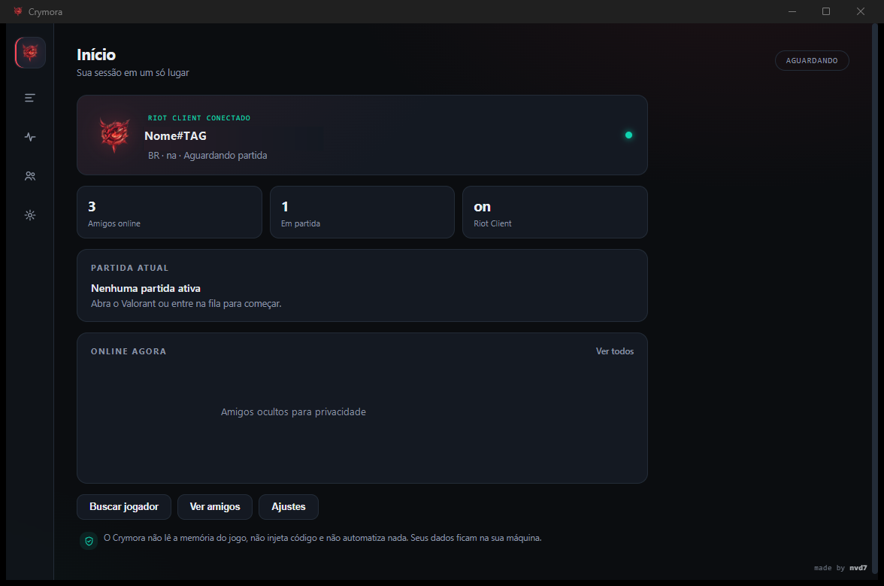

Pré-jogo 5v5
Os dois times visíveis antes da partida, com nick, rank e nível — inclusive os inimigos.
Windows 10/11 · código aberto
Pré-jogo com os dois times, amigos, tracker e ajustes em uma interface rápida, limpa e somente leitura.
Instalador por usuário · sem admin · 3,26 MiB

Recursos
Informação na hora certa, sem abrir várias abas e sem sair do jogo.
Os dois times visíveis antes da partida, com nick, rank e nível — inclusive os inimigos.
Mapa, modo, placar e roster completo enquanto a partida acontece.
Mesma cor = mesmo grupo, com tamanho e nomes no tooltip. Seu grupo e amigos na partida aparecem marcados; inimigos desconhecidos não são inventados.
Rank atual, RR, pico de carreira, ato anterior, leaderboard e últimos resultados.
Presença do cliente, online primeiro, status, rank e nível quando disponíveis.
Tema, cor de destaque, densidade, idioma, inicialização com o Windows e Discord.
Ao voltar o foco para o app, a atualização acontece na hora — sem esperar o próximo ciclo.
Segurança
O Crymora conversa apenas com o Riot Client da sua máquina e com serviços públicos da Riot. Não existe backend próprio, telemetria ou conta na nuvem.
Ler a política de segurança →O Crymora não é afiliado, endossado ou aprovado pela Riot Games. Esta versão mostra os inimigos no pré-jogo, comportamento que a Riot classifica como scouting e considera uso não aprovado. Use por sua conta e risco e não compartilhe com quem não aceitou esse risco.
O app não é um cheat: não lê memória, não injeta código, não cria overlay, não automatiza input e não altera arquivos do jogo.
Instalação
Pegue a versão mais recente na página de releases do GitHub.
Compare o hash do arquivo com o publicado junto da release.
Instala só para o seu usuário, em %LOCALAPPDATA%\Crymora, sem pedir admin.
Confira com Get-FileHash .\Crymora_0.1.2_x64-setup.exe -Algorithm SHA256.
b0ad3fc0da785662b1a592c265862e241cc10b2e2134cca1f9a61d522985db7f
O executável não é assinado digitalmente. Se o SmartScreen avisar, clique em Mais informações → Executar assim mesmo. O código-fonte completo está no GitHub para auditoria.
FAQ
Não. Ele não lê memória do jogo, não injeta código, não cria overlay, não automatiza input e não altera arquivos do Valorant. É um leitor passivo de APIs locais e logs.
Porque o instalador ainda não tem assinatura digital. O código-fonte é público e o SHA-256 do binário é publicado junto da release.
Sim. O Crymora usa a sessão local do Riot Client. Sem o cliente aberto, ele mostra o estado offline e não consegue listar partidas ou amigos.
Não. O Crymora não tem backend próprio nem telemetria. As únicas conexões são com o Riot Client local, endpoints do próprio Riot e o CDN público valorant-api.com para ícones.
Porque o app consulta o endpoint local de loadouts, que devolve o Subject dos 10 jogadores, e usa o ShooterGame.log como reserva. Isso é o que a Riot chama de “scouting” e não é um uso aprovado.
Sim. O pico é calculado a partir do histórico de atos retornado pelo PD e validado contra o tracker.gg para as contas testadas.
Baixe o Crymora e deixe o pré-jogo mais claro.